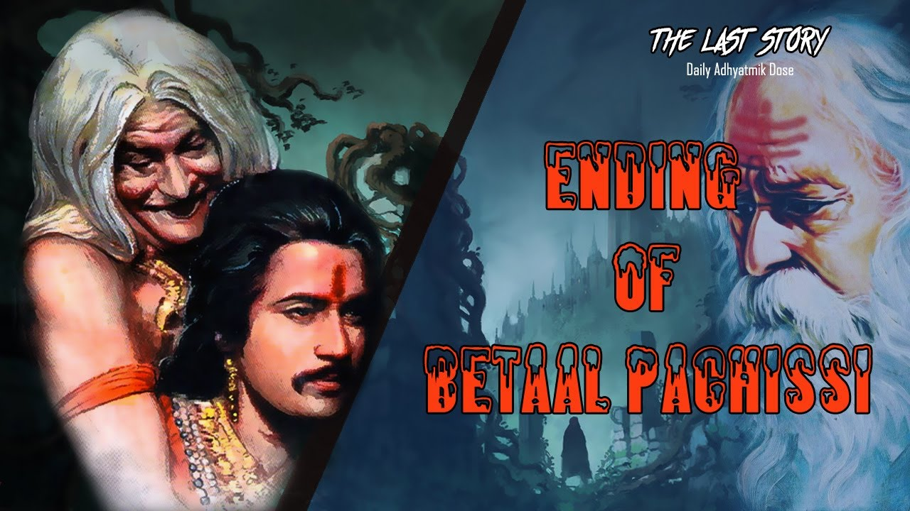

Conclusion
TALES OF KING VIKRAM AND BETAAL THE VAMPIRE-From
Bhavishya Puran
Vikram era started in 57 BC by Vikramaditya the Great as a commemoration
of his victory upon the Shaks. There is plentiful literature on Vikramaditya, and
in the Bhavishya Puran itself there are descriptions of Vikramaditya in more
than 40 chapters between Pratisarg Parv I and IV. Pratisarg Parv IV, chapter
1 of Bhavishya Puran says that after the elapse of a full 3,000 years in kaliyug
(3102 - 3000 = 102 BC), a dynamic Divine personality was born who was named
Vikramaditya. Bhavishya Puran further says that the great King Vikramaditya
ruled for one hundred years. When he was only five years old he went into the
jungles to worship God. After twelve years, when he came out, God Shiv sent
for him a celestial golden throne which was decorated with thirty-two statues.
According to the above descriptions Vikramaditya lived for (5 years + 12 years
+ 100 years) 117 years (102 BC - 15 AD).
Kalidas, the greatest poet, writer and the literary figure of his time, living a
pious life and sincerely devoted to his scholarly work, was one of the nine gems
of King Vikram's court. The "Jyotirvidabharnam" by Kalidas tells in its first cha
that Vikram era started at the elapse of (agni 3, ambar 0, yug 4 and ved 4 =
3,0,4,4) 3,044 years of kaliyug. Thus, the 3,045th year of kaliyug was the
beginning of Vikram era which is 57 BC. At the end of Jyotirvidabharnam,
Mahakavi Kalidas mentions the exact date of his writing and says that
in the Kali era 3067 he had started to write this book. It means, he wrote
that book when 3,067 years of kaliyug had passed. That comes to 35 BC (3102
- 3067 = 35), which is after the beginning of Vikram era. Thus, Vikramaditya
was born in 102 BC (3102-3000), established his 'era' in 57 BC and left this
earth planet in 15 AD.
Captain sir Richard R Burton has translated 11 stories under the caption
TALES OF KING VIKRAM AND BETAAL THE VAMPIRE and concluded In
otherwords, to the present day, whenever a Hindu novelist, romancer, or
tale writer seeks a peg upon which to suspend the texture of his story, he
invariably pitches upon the glorious, pious, and immortal memory of that
Eastern Kin Arthur, vikramadita, shortly called vikram.